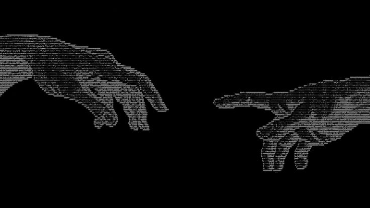

Open to ML and data roles
Aryan Awasthi
The limit of effort of n, as n goes to infinity, equals still going.
I try every reasonable answer, then prove which one is better.
Machine learning and data student at Thapar Institute. Most recently an AI Research Intern on model evaluation at Appy Pie (Pixazo), where I ranked 15 models over 1,050 match-ups with Elo, Bradley-Terry and bootstrap confidence intervals.
The hands are denoised from noise in 40 steps, like a diffusion sampler. Touch them to add noise back.
About
New Delhi, India
About Aryan

I build the test before I trust the model.
I'm a final-year Electronics and Computer Engineering student at Thapar Institute. Most of my work sits where machine learning meets measurement: Elo and Bradley-Terry leaderboards, speaker-grouped validation, retrieval benchmarks, and the numbers that say whether a change actually helped.
I'm looking for ML, data and analytics internships and new-grad roles where being precise about results is part of the job.
Experience
Jun to Jul 2026, 2-month internship
Making a model leaderboard you can trust
AI Research Intern, Data and Model Evaluation
Appy Pie (Pixazo), Noida
across 15 models
caught pre-launch
cost dashboard
audited
- Model leaderboard
Built a statistical evaluation system using Elo, Bradley-Terry MLE and bootstrap confidence intervals. It caught three broken scoring signals and a leaderboard discrepancy before launch.
- Cost analytics
Shipped a React dashboard with live per-model cost, an Elo-per-dollar ranking and a quality-versus-cost Pareto frontier. It became the team's reference for model purchasing.
- API forensics
Probed more than six production model endpoints and documented hidden behaviour, including a 14-image input limit, async submit-then-poll and field-name mismatches. The public API reference was corrected as a result.
- Docs audit
Audited the 73-model catalog, surfaced a rendering bug present on every model page and fixed pricing inconsistencies.
- Process
Replaced manual reporting with an automated cost-tracking pipeline covering 15+ models across 6 modalities.
Projects
Five, from 2025 to 2026
Five projects, each drawn as its pipeline
-
CollegeBotcollegebot-rag
- Problem
- Answer questions about admissions, fees, hostels and placements only from source documents, cite the document and page, and decline when the answer is not there.
- Result
- Hybrid dense and BM25 retrieval raised facts reaching the context from 77.1% to 88.6%, matching a cross-encoder reranker with no added latency. 2,185 chunks from 24 documents, 64 offline tests.
- Limit
- Refusal accuracy is 0.87 to 0.97 against a 0.95 target. Older documents sometimes outrank current ones, so per-document authority weighting is the next measured change.
In motion Reciprocal rank fusion as written in rag.py, k = 60. A passage both retrievers find outranks one that only either finds. Passage names are illustrative. -
Spoken grammar scoringshl-grammar-scoring
- Problem
- Predict a 0 to 5 grammar score from 45 to 60 seconds of spontaneous speech, when speech recognisers correct the errors by default.
- Result
- Each clip is read three ways: verbatim transcripts into DeBERTa-v3-large, speech encoder embeddings, and an audio language model with an attention-pooling head, combined in a non-negative blend. Out-of-fold Pearson r of 0.915 and RMSE 0.500 on speaker-grouped folds.
- Limit
- Test clips run shorter than training clips, so every model had to be retrained on test-length crops to stay calibrated.
In motion The attention-pooling head in the main model. Every epoch it sees a fresh test-length prefix of each clip and learns which frames carry the grammar evidence. Frames and weights are illustrative. -
Text-to-image evaluation arenaIMAGE-LLP-VISION
- Problem
- Rank images from text-to-image models fairly, comparing each image only with images made from the same prompt.
- Result
- Round-robin within prompt groups cuts 50 images from 1,225 matches to 225. Five scorers judge each match and Elo and Bradley-Terry MLE rank the results. Runs locally on Apple Silicon or CUDA, at zero API cost.
- Limit
- Ratings are comparable within a prompt group, not across groups.
In motion Round-robin inside prompt groups cuts 1,225 matches to 225. Inside a group, Elo with K = 32 from 1500 updates after every match; the outcomes shown are illustrative. -
Audio LLM grammar scorerLORA_for_GPU
- Problem
- Fine-tune Voxtral-Mini-3B, an audio language model, to score spoken grammar on a consumer GPU. It was built as a candidate for the spoken grammar blend; validation rejected it, so the blend keeps frozen Voxtral features with an attention-pooling head.
- Result
- 4-bit NF4 weights with LoRA adapters fit an 8 GB GPU. Speaker-grouped 5-fold cross-validation keeps the out-of-fold predictions honest.
- Limit
- A full run takes about 3 to 5 hours, and the model trains on 30-second crops, so longer test clips are scored in windows.
In motion LoRA adds a trainable rank-16 product B A to a frozen 4-bit weight matrix. For an example 3,072 x 3,072 projection that trains 1.04% of the weights. -
Self-pruning neural networkPyTorch
- Problem
- Prune a CIFAR-10 network while it trains, instead of in a separate step afterwards. Case study for the Tredence AI Engineering internship.
- Result
- Every weight in the classifier head has a sigmoid gate with an L1 penalty, so weights that do not help the loss are switched off. Three lambda values map the sparsity-accuracy trade-off.
- Limit
- Only the fully connected head is gated. It holds 89% of the parameters, and the convolutional layers are left unpruned to keep features stable.
In motion The three lambda runs from the report. Each prunes the classifier head fully; a stronger penalty prunes sooner and costs accuracy. Per-gate timing is illustrative.
- Stock market direction, Random Forest, XGBoost and BiLSTM on 50+ features with time-aware validation and a backtester
- Plato Sniper, a team poker engine that compares Monte Carlo equity with pot odds over 1,500+ trials per decision
- OptiVector, which turns PNG and JPG raster images into clean, scalable vector paths
Method
Six decisions and the evidence
Every answer gets tested against the alternatives
Before I commit to a design, I list the reasonable options, measure them on the same footing and keep the one the evidence supports. These are real decisions from my projects, with the options I compared and the reason the winner won.
-
Dense, sparse or hybrid retrieval?CollegeBot
Fig. 1 Share of test questions whose answer fact reached the model's context, and the latency each retrieval setup adds, from the CollegeBot README. The green row is the one that shipped. Animated with Manim. Retrieval setups compared Setup Fact reaches context Added latency Dense MMR, k = 6 77.1% none BM25 only, top 8 80.0% none Dense + cross-encoder reranker, top 8 88.6% about 2.0 s per query Hybrid dense + BM25 (RRF), top 8, shipped 88.6% none Hybrid + cross-encoder reranker, top 8 85.7% about 1.4 s per query Hybrid, top 16 91.4% none, but twice the context tokens Chose hybrid with reciprocal rank fusion. It ties the best reranker at 88.6% with no added latency, and stacking a reranker on top made it worse. The corpus is full of proper nouns and exact amounts, where lexical matching beats a 384-dimension dense embedding.
-
How do you keep a grammar error in the transcript?Spoken grammar scoring
Fig. 2 Illustrative waveform. The speaker says "he don't like it"; a default speech recogniser writes "he doesn't like it", repairing the very error the model has to score. A verbatim prompt keeps the error, and the audio models judge the sound itself. Animated with Manim. - Default Whisper transcripts
- Whisper prompted with a verbatim transcript full of fillers and mistakes
- Audio models that never see a transcript (WavLM, Voxtral)
Kept both picks. The verbatim prompt keeps the speaker's errors in the text, and the audio models judge how it was said, which turned out to be the strongest signal of all.
-
Random folds or speaker-grouped folds?Spoken grammar scoring
Fig. 3 Illustrative. Clips sit where a speaker model places them, so a speaker's two clips land close together. Random folds put a validation clip's twin in training, and the score partly rewards recognising the voice. Grouping by speaker keeps both clips on one side. Animated with Manim. - Random cross-validation folds
- Folds grouped by speaker
Chose speaker-grouped. Clips come in speaker twins, so random folds let a model recognise the voice and report a score it cannot reproduce on new speakers.
-
L1 or L2 penalty on the pruning gates?Self-pruning network
Fig. 4 An unimportant gate g = sigmoid(s) pushed by the penalty alone, with the same step size. The push on s is g(1−g) under L1 and 2g²(1−g) under L2, so the L2 push dies first as the gate nears zero. L1 crosses the 0.01 pruning threshold; L2 stalls above it. Animated with Manim. - L2 penalty on gate values
- L1 penalty on gate values, weight decay removed from the gates
Chose L1. The L2 gradient shrinks with the gate, so the push weakens exactly as a gate nears zero. Weight decay on the gates creates an equilibrium that stops them crossing the pruning threshold, so it is switched off for them.
-
Who grades the chatbot's answers?CollegeBot
Fig. 5 Refusal accuracy over five evaluation rounds, from the CollegeBot README. Rounds 3 and 5 ran the same setup and scored 0.974 and 0.872, so run-to-run noise at temperature 0.05 is about 0.10, larger than some of the changes being measured. Animated with Manim. - The same 8B model that wrote the answer
- A stronger 70B judge, at temperature 0.0
Chose the separate judge. A model grading its own output invites self-preference bias. Temperature is pinned at 0.0 because run-to-run spread was larger than some of the improvements being measured.
-
A ready-made conversation chain, or a plain pipeline?CollegeBot
Fig. 6 One follow-up question, two designs. The chain spends an extra model call rewriting the question before it can search, then returns the answer in one block; the plain pipeline searches straight away and streams. Durations are illustrative. Animated with Manim. - LangChain ConversationalRetrievalChain
- Retrieve, build the prompt, stream
Chose the plain pipeline. The chain makes two sequential model calls per follow-up on a rate-limited tier and does not stream cleanly. Prepending the previous question keeps follow-ups retrievable at no extra cost.
Tested and dropped, spoken grammar scoring
- Rounding to the 0.5 label grid
- Stretching the short clips' predictions
- An LLM judge, Qwen3-8B, reading transcripts
- QLoRA fine-tuning of Voxtral
- Grammar-error features: T5 edit rate, CoLA
- LanguageTool error counts
- Test-time augmentation over shifted windows
- A 24B audio model instead of the 3B
Skills
and education
Tools I use
ML and GenAI
PyTorch, TensorFlow and Keras, scikit-learn, XGBoost, Hugging Face, LangChain, RAG, QLoRA and PEFT
Statistics
Elo and Bradley-Terry ratings, hypothesis testing, bootstrap confidence intervals, time-series evaluation, F1, ROC-AUC, precision and recall
Data and BI
SQL, PostgreSQL, MongoDB, BigQuery, Power BI, pandas, NumPy, Excel and Google Sheets automation
Engineering
Python, C++, JavaScript, React, FastAPI, Flask, Django, Streamlit, Docker, Kubernetes, AWS, Git
- Thapar Institute of Engineering and Technology, PatialaB.E. Electronics and Computer Engineering, 2023 to 2027 (expected)
- JEE Mains 202392.2 percentile
- Team Fateh, low voltage systemsMPU-6050 gyroscope sensor system for driver indications, PCB design and system-level debugging
Contact
New Delhi, India (IST, UTC+5:30)